Amazon Appstore
The Amazon Appstore is a platform where customers can seamlessly find, explore, and purchase thousands of apps with the trusted and convenient shopping features Amazon is known for, such as personalized recommendations, customer reviews, and bestseller lists. Accessible directly on Kindle Fire, any computer, or Android devices, the Appstore connects users with apps that fit their needs.
As the lead designer for the next version of the Amazon Appstore, my primary focus was to enhance app discovery, deepen personalization, and streamline the app installation process. I designed experiences that scale effectively across both high-end and low-end devices, ensuring a consistent and engaging user experience regardless of the device’s capabilities. This work involved creating intuitive user flows, scalable design systems, and interaction patterns that improved the overall usability and discoverability of apps, elevating the Appstore experience for millions of users.
Behind the Scenes
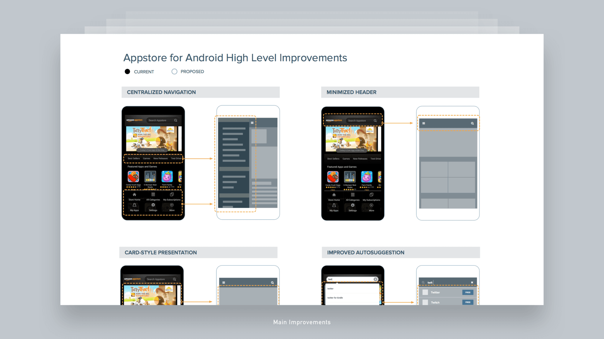
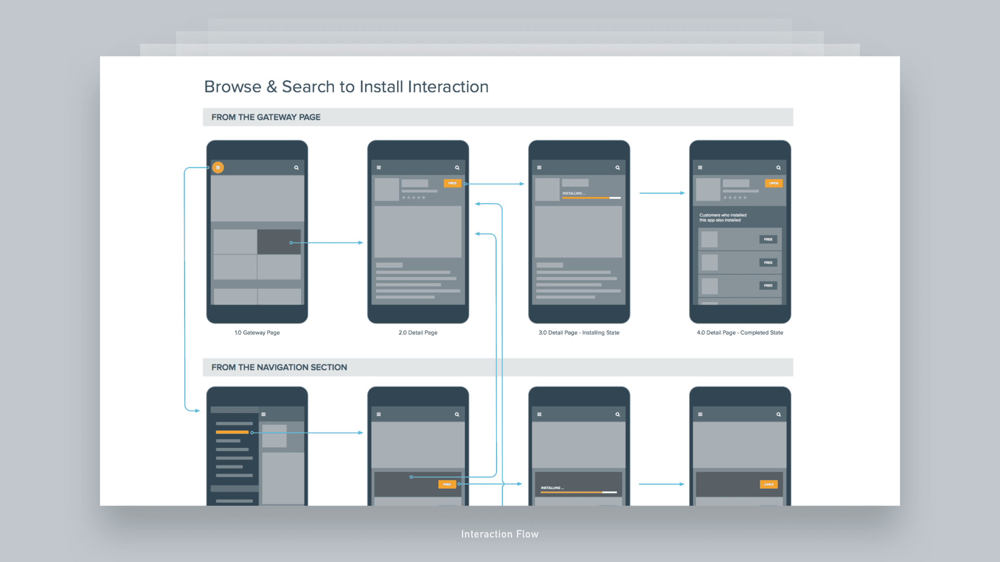
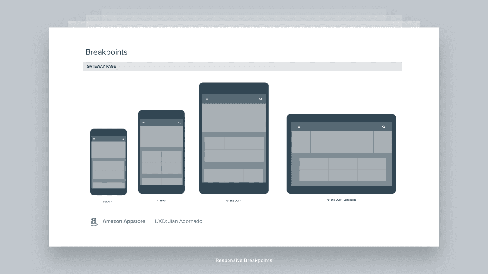
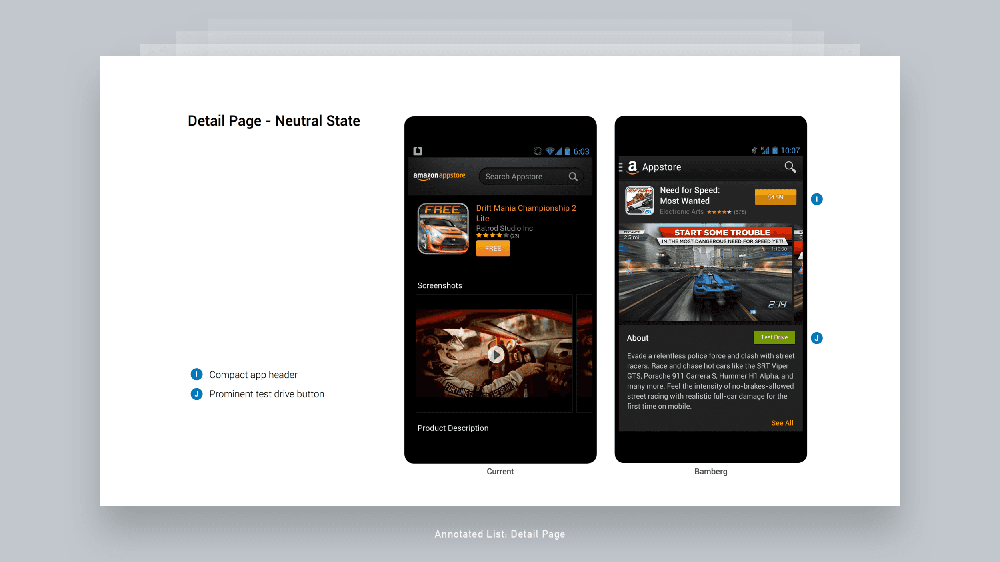
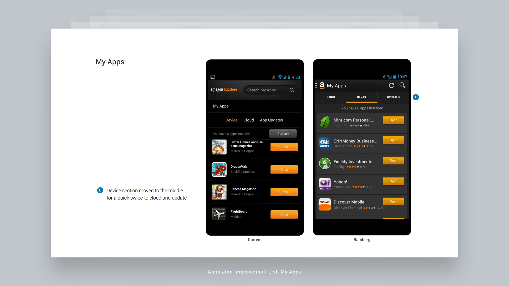
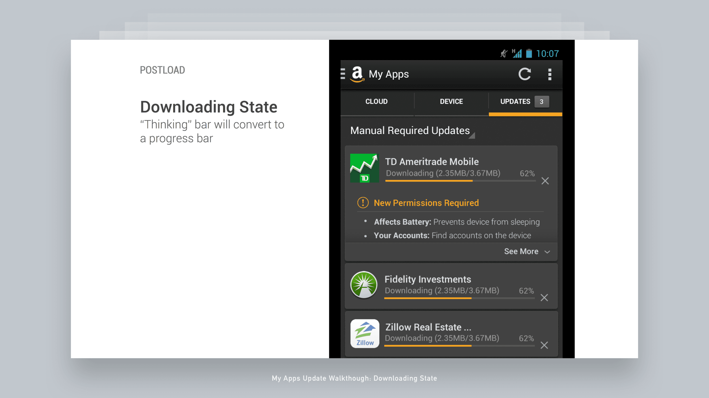
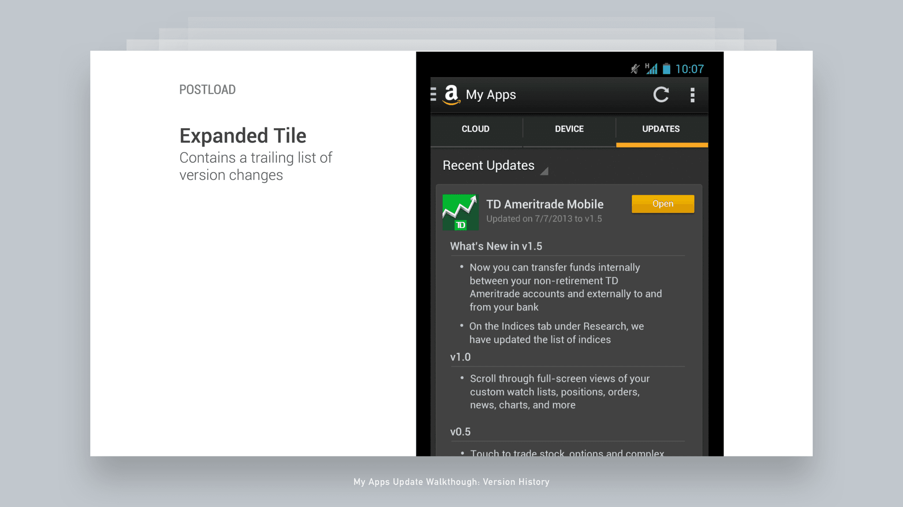
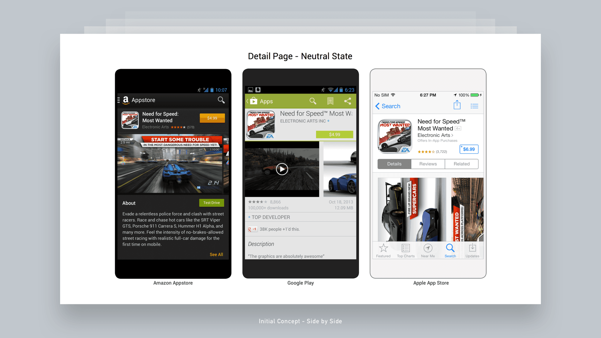
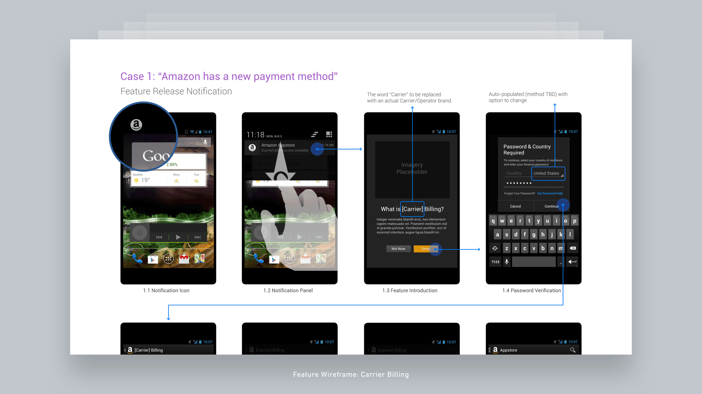
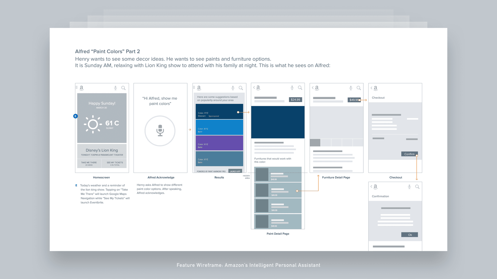
Final Designs
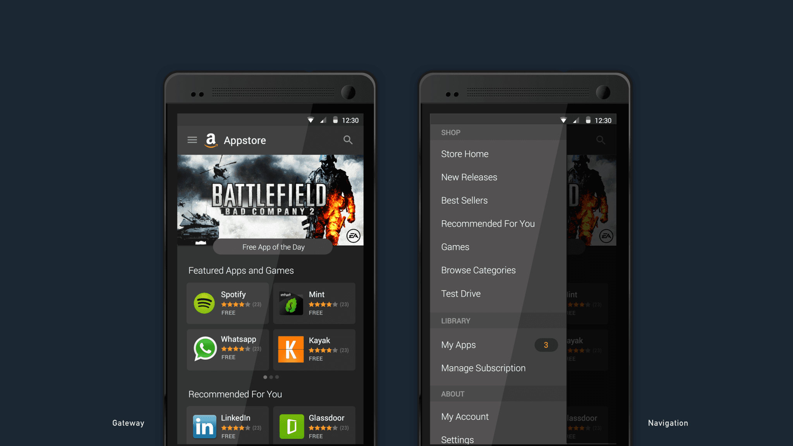
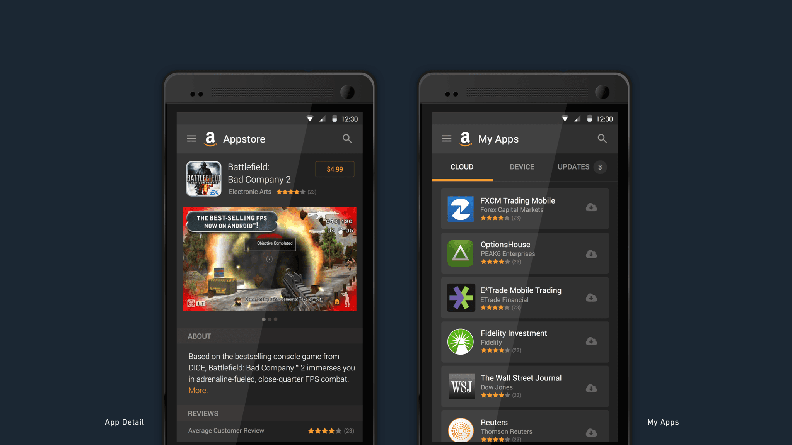